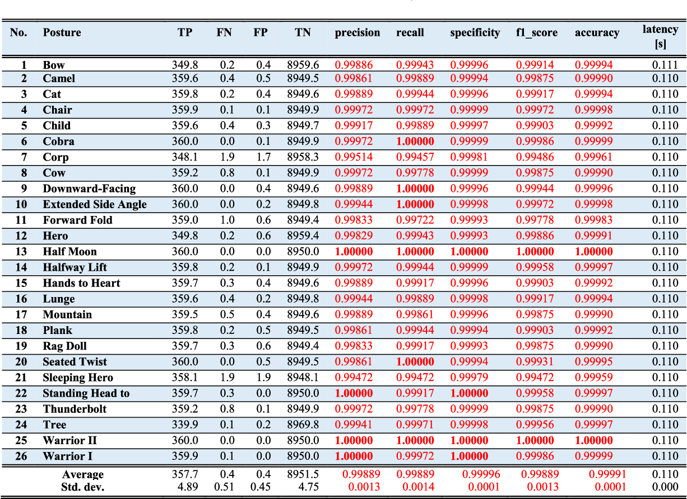

Novel IoT-Based Privacy-Preserving Yoga Posture Recognition System Using Low-Resolution Infrared Sensors and Deep Learning
IEEE Internet of Things Journal, 2019In recent years, the number of yoga practitioners has been drastically increased and there are more men and older people practice yoga than ever before. Internet of Things (IoT)-based yoga training system is needed for those who want to practice yoga at home. Some studies have proposed RGB/Kinect camera-based or wearable device-based yoga posture recognition methods with a high accuracy; however, the former has a privacy issue and the latter is impractical in the long-term application. Thus, this paper proposes an IoT-based privacy-preserving yoga posture recognition system employing a deep convolutional neural network (DCNN) and a low-resolution infrared sensor based wireless sensor network (WSN). The WSN has three nodes (x, y, and z-axes) where each integrates 8×8 pixels’ thermal sensor module and a Wi-Fi module for connecting the deep learning server. We invited 18 volunteers to perform 26 yoga postures for two sessions each lasted for 20 s. First, recorded sessions are saved as .csv files, then preprocessed and converted to grayscale posture images. Totally, 93 200 posture images are employed for the validation of the proposed DCNN models. The tenfold cross-validation results revealed that F1-scores of the models trained with xyz (all 3-axes) and y (only y-axis) posture images were 0.9989 and 0.9854, respectively. An average latency for a single posture image classification on the server was 107 ms. Thus, we conclude that the proposed IoT-based yoga posture recognition system has a great potential in the privacy-preserving yoga training system.
Experimental result
Link: https://ieeexplore.ieee.org/abstract/document/8707064
Result:
Table III represents the tenfold cross-validation results by the six measures in which the values are the average values of ten classifiers. The classifiers are trained with xyz posture images which are the concatenation of x, y, and z-axes and thus have the size of 24 × 8 pixels. The highest values are highlighted in Table III. According to Table III, obviously all the yoga postures are recognized with extremely high rates. The average value of precision, recall, specificity, F1-score, accuracy for all the yoga postures were 0.99889, 0.99889, 0.99996, 0.99889, and 0.99991, respectively. The average latency was 110 ms for all the yoga postures. The lowest (0.99472) F1-score was for Sleeping hero and the highest (1.0) F1-scores were for Half-moon and Warrior II. Recall was the best among the four (precision, recall, specificity, and F1-score) measures because 6 postures had the highest (1.0) value and the lowest value was 0.99457 for Corp. The highest precision and specificity rates were 1.0 for Half-moon, Standing head to knee, Warrior I, and Warrior II, respectively. The average TP, FN, FP, and TN were 357.7, 0.4, 0.4, and 8951.5, respectively.
